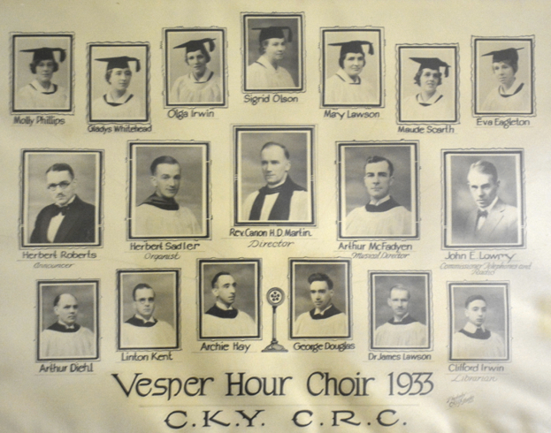

-1-MasterItem.svg)
Stories of Westminster United Church & its People / Page
170
Herb was also the first conductor of the Winnipeg Symphony Orchestra — no, not the present
one founded in 1948 — one of two under that name (plus many other small orchestras ) appearing
and disappearing in Winnipeg during the first half of the 20th Century.
(Remember, we also had
a Winnipeg Opera House in the 1890s. It was opera in name only. No Verdi and no
Wagner. Just
trained dogs, lady wrestlers etc. Also our congregation’s first church home!)
Herb was the teacher of Edith Paterson who served as organist in a number of
Winnipeg
churches, who later joined the
Winnipeg Free Press
as a columnist in History and wrote several books
on Manitoba history. He also taught such well-known members of our music
community, as Franklin
Shinn, Barry Anderson, Allan Borbridge, Beth Cool, Frans Niemeyer, and Eila
Alford.
Herb, with Hugh Bancroft, Ronald Gibson, and Filmer Hubble
established the Winnipeg Centre of the Canadian College of
organists in 1923 and were its first officers. He was also among
the first to broadcast Organ Recitals over radio station CKY
Winnipeg and also acted as organist for Vesper Hour, broadcast
weekly from 1929 through 1938 from St George’s Anglican Church.
Above, Herb is in the middle row, second from the left. This picture
was recently found, hanging in the choir room of St. George’s.
Thanks to George Bush for making this copy available.
(Mr. Bush once sang in Westminster’s choir.)
(Radio CKY carried the first Manitoba Church Service broadcast, March 31, 1923.
Within a few
months of this initial broadcast, 16 local churches were wired for broadcasting
by radio CKY.
A record In Canadian Radio at that time. )
In his ‘private’ life Herb was company Secretary for Robinson, Little Company, founded in 1875
in London, Ontario. The company began operating department stores in Eastern
Canada and,
having expanded into Western Canada as the ‘big chain of little department stores,’ operated over
180 Robinson Stores by 1970. How Herb managed his business life and his musical
life is somewhat
of a mystery. He wasn’t married. That might have helped.
Table
of Contents
Music at Westminster
